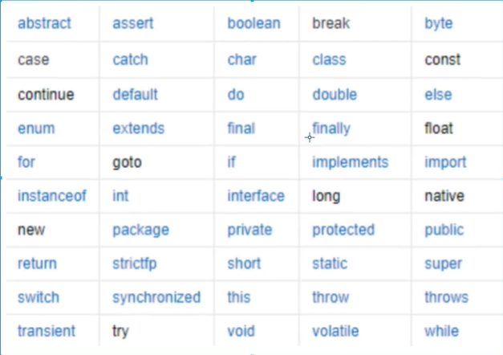
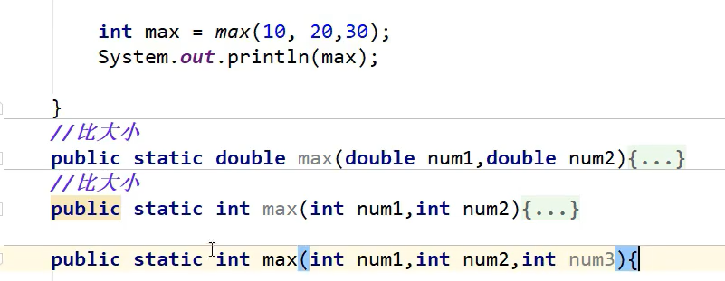
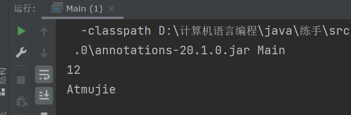

java基础
笔记内容学自链接视频：https://www.bilibili.com/video/BV12J41137hu
HelloWorld
java文件后缀
.javajava文件名要与类名一致
全语言语法雷同
java大小写敏感，写代码注意大小写
java同时存在编译型和解释型
简单说，编译型是先编译在执行，解释型是执行的同时进行编译（或者先执行后编译）
public class HelloWorld{
public static void main(String[] args){
System.out.print("Hello World!");
}
}
编译
写好java文件，就该编译成字节码了，目的是把Java文件编译成JVM能够执行的Class文件。
本地编译也可，编译后可运行编译后文件，各大编程工具都会自动编译，记事本除外
编译与否，本地大抵就是这样
java基础语法
注释：
单行：//
多行：/**/
文档：
/** * *//**开头*/结尾，中间每行以*开头
/**
* _ooOoo_
* o8888888o
* 88" . "88
* (| -_- |)
* O\ = /O
* ____/`---'\____
* .' \\| |// `.
* / \\||| : |||// \
* / _||||| -:- |||||- \
* | | \\\ - /// | |
* | \_| ''\---/'' | |
* \ .-\__ `-` ___/-. /
* ___`. .' /--.--\ `. . __
* ."" '< `.___\_<|>_/___.' >'"".
* | | : `- \`.;`\ _ /`;.`/ - ` : | |
* \ \ `-. \_ __\ /__ _/ .-` / /
* ======`-.____`-.___\_____/___.-`____.-'======
* `=---='
* ^^^^^^^^^^^^^^^^^^^^^^^^^^^^^^^^^^^^^^^^^^^^^
* 佛祖保佑 永无BUG
* 佛曰:
* 写字楼里写字间，写字间里程序员；
* 程序人员写程序，又拿程序换酒钱。
* 酒醒只在网上坐，酒醉还来网下眠；
* 酒醉酒醒日复日，网上网下年复年。
* 但愿老死电脑间，不愿鞠躬老板前；
* 奔驰宝马贵者趣，公交自行程序员。
* 别人笑我忒疯癫，我笑自己命太贱；
* 不见满街漂亮妹，哪个归得程序员？
*/
标识符
- 关键字：

java组成部分如名字，类名，变量名，方法名都称为标识符
数据类型
java数据类型分基本类型和引用类型
基本类型
整数：
- 字节： byte 1B
- 短整型：short 2B
- 整形： int 4B
- 长整形： long 8B
为了便于区分，长整型要在数字后加字母L
public class Heool{ public static void main(String[] args){ byte by = 20; short sh = 30; int in = 40; long lo = 50L; } }小数：浮点数
- 单精度浮点型：float 4B
- 双精度浮点型： double 8B
两者的区别可以简单理解为float精度小，占内存少，double精度大，占内存多
float型要在数字后加字母F
public class Hello{ public static void main(String[] args){ float fl = 1.23F; double dou = 3.1415926; } }字符
字符型: char 2B
字符型只能是一个字符，不能多定,使用时用单引号包裹，不能用双引号
字符的本质是数字，例如:
public class Hello{ public static void main(String[] args){ char ch = 'A'; char ch1 = '\u0061'; System.out.println((int)ch); System.out.println(ch1); } } //结果为 65 a 转义后为对应ascii值bool（布尔）
布尔型： boolean 1位
布尔型的值只能是true或者false
public class Hello{ public static void main(String[] args){ char ch = 'A'; boolean boo = false; } }进制
进制表示在数字前加相应标识符即可
转换
从高容量类型转低容量会自动转换
从低容量到高容量要强制转换
计算后数据非父数据类型，要将一个数先强制转换为目标数据，防止出错
int a = 10;
int b = 20;
c = a / (double)b;
多个整形计算，如果有long类型，自动转换后类型一定为long，无long一定为int
多个浮点型计算，如果有double类型，自动转换后一定为double
转换会存在内存溢出和精度问题
public class num{
public static void main(String[] args){
float a = 13.9F;
double b = 3.14;
int c = 123;
System.out.println(a);
System.out.println(b);
System.out.println(c);
b = a;
c = (int)a;
System.out.println(b);
System.out.println(c);
}
}
引用类型
new的一个类的变量即为引用类型
Demo03 demo03 = new Demo03();//Demo03即为引用类型
输出——print与println
println输出完毕会换行，print输出完不会换行
变量
变量三要素： 类型，变量名，作用域
作用域即变量作用范围
类变量和其他变量的区别是在类型前定义了静态 static
若没有对实例变量进行定义，基本类型初始为0，其他类型初始为null
public class Hello{
static String wu = "来打游戏吗？";
String gree = "拉个女孩子，一起打游戏？";
public static void main(String[] args){
String gile = "早啊";
System.out.println(gile);
Hello hello = new Hello();
System.out.println(hello.gree);
System.out.println(wu);
System.out.print("十点开黑，不见不散");
}
}
常量
final为修饰符，不存在先后顺序
运算符
之前其他语言学了，不做详细解释
位运算
说一下左右移
数据在计算机中以二进制存在，如
2 ： 0000 0010
左移<<就是将2的二进制整体向左移动，右移向右
2<<1 : 0000 0100
简单理解，左移乘二，右移除二
逻辑运算符
Sring 后出现+，默认后面的所有类型为字符串
三元运算符
x ? y : z
如果x为真，使用y否则使用z
javadoc
doc指令
@author: 作者@version：版本@since: 开发版本
/**
* @author MUjie
* @version 1.0
* @since 13.0.2
*
*/
public class Doc {
String name;
/**
* @author Mujie
* @param name
* @return
*/
public String test(String name) throws Exception{
return name;
}
}
java包机制
java的包就相当于命名空间，具体不解释
包中文件使用package 标识
这样定义同名类就不会冲突
java的包机制还是比较特殊的，规定包名必须为倒置的域名，当然也可以不这么做
以src文件为项目根目录，就好像php是以www为根目录
目录格式：
java语法
Scanner 类-接收用户输入
java在java.util中定义了获取输入的类
使用时需将Scanner类实例化
Scanner scanner = new Scanner(System.in);
//out表示输出，in表示输入
使用 hasNext 与 hasNextLine 判断是否还有输入的数据
使用next或nextLine接收用户输入
hasNext和hasNextLine同理
next和nextLine
举个简单的例子
如果使用next得到输入，遇到空格就会停止，空格后面的数据不会接收
这时没有接收的数据仍在缓冲区中，若使用循环，会得到没有接收的数据
可以看到，循环语句没有让我们再次输入
nextLine 遇回车结束，当写在循环中时，会再次让我们输出
hasNext和hasNextLine
hasNext()方法会判断接下来是否有非空字符.如果有则返回true,否则返回falsehasNextLine()方法会根据行匹配模式去判断接下来是否有一行(包括空行),如果有则返回true,否则返回false
Scanner scanner = new Scanner(System.in);
int i = 0;
while (i!=2) {
if (scanner.hasNext()) {
String str = scanner.nextLine();
System.out.println(str);
}
i++;
}
如上述的代码
当写入
Hello【回车】
a【空格】h
Hello在hasNext和nextLine均判断通过，循环语句再次请求输入
【空格】h在hasNext时判断为结束，所以nextLine只接收到了空格，h仍在缓存区
后面我再次测试，这个问题没有出现，输出了正常的【空格】h，所以具体原因没来的即探究
结论
获取输入时，需将next-hasnext 或nextLine-hasNextLine成对出现，否则有时会产生错误
其他的
除字符型String默认nextLine和hasNextLine外，指定其他输入的类型需要特别指明
如int型为nextLineInt,double为nextLineDouble
不指明会报错
同时，除String可用Line得到外，其他类型数据均只能使用next+类型而不能使用nextLine
如果使用next获取数据后在缓存区留有数据的情况下关闭Scanner，程序会报错
结构控制
顺序结构略
选择结构
语法：if(表达式){语句}
注意：比较String型不要使用==而是改用equals(译：与..相等)
public static void main(String[] args) {
//从键盘接收数据
Scanner scanner = new Scanner(in);
String str = scanner.nextLine();
scanner.close();
if (str.equals("")) out.print("说点什么吧");
else out.println(str);
}
这里推荐一个idea的快捷键ALT+ENTER
可以快速修正代码，让代码简洁起来
if语句中定义的值只能在该if中使用，如果要做其他作业域使用，需要定义至相应作用域
多级选择switch
语句：
switch(字符)
case 字符:
语句1;
case 字符:
语句2;
default:
语句3;
//break可选
//若case没有匹配到，执行def
//不使用break，会发生case穿透现象，即从匹配成功的开头输出下面所有选项
//JDK7后，表达式支持比较字符串
循环结构
基础
- while 条件为真执行循环，先判断后执行
- do-while 条件为真执行循环，先执行后判断（所以至少执行一次循环语句）
- for(初始值；条件；迭代) 条件成立执行循环
遍历
语法：
//定义数组
int[] a = [0,10,20,30,40];
//遍历输出
for(int x:a){
System.out.println(x);
}
//将a中的元素挨个复制给x，输出x
循环控制
break,continue
过于常用，不做解释
goto标签
java中没有被正式使用
字符串+:即为一个标签，用于跳回指定位置
outer:
for (int x : nums) {
if (x == 40) continue outer;
out.print(x + "\t");
}
//一般情况，可以写，没必要，和continue效果相似
java方法
java语句解析
public class Kong {//定义一个属性是public的类，名为Kong
public static void main(String[] args) {
//定义一个属性是public的静态方法，名为main，执行结束后返回值为void(无返回值/不返回)
}
public int sum(int a;int b){
//定义一个属性是public的方法，名为sum，传入两个整数a,b,执行结束后返回一个int类型数据
return 10; //返回10
}
}
调用
int sum = sum(2,3);out.println(sum);}public static int sum(int a,int b){ return a+b;}//输出5
如果方法有返回值，方法调用通常当作一个值处理
如果返回空，则用语句调用
形参和实参
- 形参：在程序中定义的参数，相当于占位符
- 实参：实际传入的参数
方法重载
java可以定义名称相同参数不同的方法，以达到在不同类型中调用的目的

可变传参
当需要传入很多参数时，直接定义会很繁琐，这时需要用到可变传参
语句：
public int num(int a,int...b){}
int...b即为可变传参，可以接收任意的个数的值
可变传参必须定义在所有形参之后
递归
递归即自己调用自己
递归要求两个条件
递归边界：递归必须有界限，不能一直执行下去
递归体：递归的语句
public class Main {
public static void main(String @NotNull [] args) {
for (String x : args) System.out.println(x);
Scanner scanner = new Scanner(System.in);
int n = scanner.nextInt();
System.out.println(fo(n));
}
public static int fo(int n) {
if (n < 1) System.out.println("错误的输入");
if(n == 1) return 1;
else return n * fo(n - 1);
}
}
java数组
定义数组
String[] num;//创建/声明一个数组num = new String[10];//声明该数组有十个值
或者写一起
String[] num = new String[10];
如果直接赋值，则无需使用new声明
int[] num = {10,1,1,1,1};
数组是一个对象，可以使用引用类型定义
所有new的都是对象
二维数组
int[][] array = {{1,2,3},{2,3,6}};
Arrays类
java在java.uitl中提供了对数组的支持，这里简单举例几个常用的方法
Arrays.toString(a);//打印数组a
Arrays.sort(a);//对数组a升序排序
Arrays.fill(a,1,3,0)//将数组中从第2到第3个数填充为0(左闭右开)
冒泡排序
import java.util.Arrays;
import static java.lang.System.out;
public class Plex {
public static void main(String[] args) {
int[] b = {1, 3, 2, 67, 3, 645, 234, 13, 23}; //定义要排序的数组
out.println(Arrays.toString(num(b))); //输出新数组
}
static public int[] num(int[] b){
for (int i = 0 ; i < b.length - 1; i++) { //确定排序次数
for (int j = 1; j < b.length - i; j++) { //定位排序点
if(b[j-1] > b[j]){ //比较，排序
//大小换位
int juan = b[j-1];
b[j-1] = b[j];
b[j] = juan;
}
}
}
return b; //返回结果
}
}
稀释数组
//稀疏数组
import static java.lang.System.out;
//主函数
public class Xis {
public static void main(String[] args) {
int[][] num = num();//得到原数组
int[][] xishu = quzhi(num);
out.println("======================================");
//输出稀疏数组
for (int i = 0; i < fuhzi(num, xishu).length; i++) {
for (int j = 0; j < fuhzi(num, xishu)[0].length; j++) {
out.print(fuhzi(num, xishu)[i][j] + "\t");
}
out.println();
}
out.println("++++++++++++++++++++++++++++++++++++++++");
//稀疏数组还原
int[][] huanyuan = huanyuan(xishu);
for (int[] ints : huanyuan) {
for (int j1 = 0; j1 < huanyuan[0].length; j1++) {
out.print(ints[j1] + "\t");
}
out.println();
}
}
//定义原数组
public static int[][] num() {
int[][] num = new int[11][11];
num[3][4] = 1;
num[2][2] = 2;
for (int[] ints : num) {
for (int j = 0; j < num[0].length; j++) {
out.print(ints[j] + "\t");
}
out.println();
}
return num;
}
//得到稀疏数组头
public static int[][] quzhi(int[][] num) {
int shu = 0;
for (int i = 0; i < 11; i++) {
for (int j = 0; j < 11; j++) {
if (num[i][j] != 0) {
shu++;
}
}
}
int[][] xishu = new int[shu + 1][3];
xishu[0][0] = num.length;
xishu[0][1] = num[0].length;
xishu[0][2] = shu;
return xishu;
}
//原数组压缩为稀疏数组
public static int[][] fuhzi(int[][] num, int[][] xishu) {
int k = 0;
for (int i = 0; i < 11; i++) {
for (int j = 0; j < 11; j++) {
if (num[i][j] != 0) {
k++;
xishu[k][0] = i + 1;
xishu[k][1] = j + 1;
xishu[k][2] = num[i][j];
}
}
}
return xishu;
}
//稀疏数组还原
public static int[][] huanyuan(int[][] xishu) {
int[][] shu = new int[xishu[0][0]][xishu[0][1]];
int i = 1;
while (i <= xishu[0][2]) {
shu[xishu[i][0] - 1][xishu[i][1] - 1] = xishu[i][2];
i++;
}
return shu;
}
}
结果
System.arraycopy方法
方法原型定义为：
public static native void arraycopy(Object src, int srcPos, Object dest, int destPos, int length);
含义是复制指定源数组src到目标数组dest中。
复制从src的srcPos索引开始，复制的个数是length，复制到dest的索引从destPos开始。
下面是一个样例：
int[] array1 = {1 ,2, 3};
int[] array2 = {4, 5, 6};
int[] array3 = new int[array1.length + array2.length];
System.arraycopy(array1, 0, array3, 0, array1.length);
//将array1复制进array3，此时array3为{1, 2, 3}
System.arraycopy(array2, 0, array3, array1.length, array2.length);
//接着array3的尾部将array2复制进array3，此时array3为{1, 2, 3, 4, 5, 6}
面向对象
以类的方式组织代码，以对象的方式封装数据。
调用
静态
静态对象可全局直接调用
public class Demo01 {
public static void main(String[] args) {
System.out.println(sys());
}
public static String sys() {
return "这是静态调用";
}
}
动态
静态方法调用动态对象需要先实例化类，这个类可以是包含此对象的类本身
public class Demo01 {
public static void main(String[] args) {
//静态
System.out.println(sys());
//动态
Demo01 demo01 = new Demo01();
System.out.println(demo01.doc());
}
public static String sys() {
return "这是静态调用";
}
public String doc(){
return "这是动态调用";
}
}
同一类中，动态方法调用动态对象直接调用
public class Demo01 {
public static void main(String[] args) {
System.out.println(sys());
Demo01 demo01 = new Demo01();
System.out.println(demo01.doc());
System.out.println(demo01.doca());
}
public static String sys() {
return "这是静态调用";
}
public String doc(){
return "这是静态方法调用动态对象";
}
//动态调用动态
public String doca(){
return docb();
}
public String docb(){
return "这是动态方法调用动态对象";
}
}
实例变量调用
同一类中调用实例对象，用this指向本身
public class Demo02 {
String a = "这是一个实例对象";
public String String(){
String b = this.a;
return b;
}
}
构造器
即使一个类什么都不写，也会存在一个方法，这个方法与类同名，称为构造器
new一个对象，本质是调用构造器
一但定义有参构造，就一定要显示无参构造（无参构造默认不显示）
必须和类名称相同
不能有返回值，包括void
构造器实例化初始值
public class Demo03 {
int a;
public Demo03() {
this.a = 1;
}
}
有参构造
//构造器
public class Demo03 {
int a;
public Demo03(){} //有参构造必须显示无参
public Demo03(int a) {
this.a = 1;
}
}
//main调用输出
public class Main {
public static void main(String[] args) {
Demo03 demo03 = new Demo03(2);
System.out.println(demo03.a);
}
}
对象内存分析

对象：对象是类的一个实例（对象不是找个女朋友），有状态和行为。

抽象
封装
封装的优点
这里统一接口，是因为默认获取值使用getName(),修改（设置）值使用setName(),这样就达成了接口的统一
快捷键：ALT+INS
public class 封装 {
//属性私有化
private String name;
private String sex;
private int age;
//提供接口，获取数据为get,修改为set
public String getName() {
return name;
}
public void setName(String name) {
this.name = name;
}
public int getAge() {
return age;
}
public void setAge(int age) {
this.age = age; //this用于调用当前类中的属性
}
}
public class Main {
public static void main(String[] args) {
封装 fenzhuang = new 封装();
fenzhuang.setAge(12); //外部传值修改
fenzhuang.setName("Atmujie");
out.println(fenzhuang.getAge()); //获取类中的属性
out.println(fenzhuang.getName());
}
}

重载
但一个方法需要处理多个不同类型的数据时，要用到重载
private Scanner(Readable source, Pattern pattern) {
assert source != null : "source should not be null";
assert pattern != null : "pattern should not be null";
this.source = source;
delimPattern = pattern;
buf = CharBuffer.allocate(BUFFER_SIZE);
buf.limit(0);
matcher = delimPattern.matcher(buf);
matcher.useTransparentBounds(true);
matcher.useAnchoringBounds(false);
useLocale(Locale.getDefault(Locale.Category.FORMAT));
}
/**
* Constructs a new {@code Scanner} that produces values scanned
* from the specified source.
*
* @param source A character source implementing the {@link Readable}
* interface
*/
public Scanner(Readable source) {
this(Objects.requireNonNull(source, "source"), WHITESPACE_PATTERN);
}
/**
* Constructs a new {@code Scanner} that produces values scanned
* from the specified input stream. Bytes from the stream are converted
* into characters using the underlying platform's
* {@linkplain java.nio.charset.Charset#defaultCharset() default charset}.
*
* @param source An input stream to be scanned
*/
public Scanner(InputStream source) {
this(new InputStreamReader(source), WHITESPACE_PATTERN);
}
这就是典型的重载，简单说就是方法名相同，形参类型不同是java允许的
继承
使用extends继承父类，子类/派生类继承父类的所有方法
private 属性不会被继承
final 修饰的类不能继承
所有类默认继承Object类
java只有单继承，没有多继承
修饰符
public 公共的
private 私有的
protected 受保护的
default 默认 （可不写）
super
正如访问类本身的属性/方法需要使用this.属性名/方法名,在继承父类之后，子类调用父类的属性/方法需要使用super.属性名/方法名
public class 封装 {
private String name;
private int age;
protected String sex = "女";
public void print(){
System.out.println("这是父类的方法");
}
}
package oop;
public class 继承 extends 封装{
private String sex = "男";
public void print(){
System.out.println("这是子类的方法");
}
public void sys(String sex) {
System.out.println(sex); //这里调用的是传入的实际参数
System.out.println(this.sex); //这里调用继承类本身的属性
System.out.println(super.sex); //这里调用父类的属性
print(); //直接调用
this.print(); //这里调用继承了本身的方法
super.print(); //这里调用父类的方法
}
}
public class Main {
public static void main(String[] args) {
继承 jc = new 继承();
jc.sys("人妖");
}
}
构造方法的调用
构造方法，可直接用this()和super()调用，但要写在无参构造中，不写亦可，继承时会自动调用
package oop;
public class 封装 {
public 封装() {
System.out.println("这是父类构造器");
}
}
package oop;
public class 继承 extends 封装{
public 继承() {
super(); //调用父类构造器
}
}
重写
重写是方法的重写，与属性无关
父类的引用可以指向子类
注：静态方法和私有方法没有重写
方法的调用只和类型有关
非静态方法子类重写了父类的方法
多态
父类的引用可以指向子类
对象的实际类型是确定的，但指向的类型是不确定的
父类指向子类
- 可以调用父类方法
- 不能调用子类独有的方法
- 子类重写方法，调用重写后的方法
简单来说：父类型调用子类方法，是在调用子类继承并重写后的方法
instanceof

instanceof用于判断两个类是否有关（继承）
类型转化
类的类型转化同变量的转化
高–>低：强制转化
低–>高：自动转化
public class 继承 extends 封装{
private String sex = "男";
public String abcd = "110吗，这有程序员想当黑客";
}
//父类封装是高，子类继承是低
public static void main(String[] args) {
封装 fz = new 继承(); //子类继承转化为父类封装，自动转化，也称为多态
System.out.println(((继承)fz).abcd);//父类要调用子类独有的属性，要强制转化
}
子类转化父类，会丢失自己独有的方法
静态方法static
static无法重写，被动态调用的直接原因是：
static和类一起加载，优先级很高，它加载时其他属性方法都没有被加载，所以无法直接调用
java执行顺序
静态代码块 –> 匿名代码块 –> 构造函数 –> 方法 【静态和类一同加载】
静态代码块整个程序运行中只执行一次
package oop;
public class 测试 {
public 测试() {
System.out.println("构造方法");
}
{
System.out.println("匿名代码块");
}
static {
System.out.println("静态代码块");
}
}
public class Main {
public static void main(String[] args) {
测试 cs = new 测试();
}
}

抽象类
abstract
抽象类的所有方法都要由子类去实现，不能new
一但有抽象方法，类必须声明为抽象类
- 抽象类中的非抽象方法不用重写，其他必须重写，接口的方法必须重写；
- 接口和抽象类中只有方法名，没有定义的，如果你不定义 也就是空方法，接口就是为了弥补java不能多重继承，接口针对的是对象而不是实现。实现的部分可以交由对象去实现。
接口 interface
实现接口的类规范命名为nameImpl
接口使用implement调用

内部类
- 成员内部类
- 静态内部类
- 局部内部类
- 匿名内部类
成员内部类
内部类最大的好处就是可以访问外部类的私有方法和属性
静态内部类
静态内部类就是给成员内部类加上静态属性
局部内部类
写在方法中的类是局部内部类
匿名内部类

实例化时不给实例对象起名，叫匿名内部类
异常处理
异常关键字
try、catch、finally
try
监控包裹的代码块，捕获此代码块中出现的异常
catch
定义捕获的异常类型，设置解决方案
语句：
catch(异常类型 自定义别名){解决方案}catch可以设置多个
finally
对异常的善后工作，即使检测的代码块没有异常，finally还是会被执行
try,catch,finally都是对异常的检测以及抛出，往往处理无法预料的异常
public class 异常 {
public void yich(int a,int b){
try {
System.out.println(a/b);
} catch (Exception e) {
System.out.println("异常");
} finally {
System.out.println("finally");
}
}
}
public class Main {
public String a = "1";
public static void main(String[] args) {
异常 yc = new 异常();
yc.yich(10,0);
}
}
throw throws
不同于try、catch、finally是在发生异常时接收，thorw和thorws用于主动抛出异常
即我们知道10/0是错误的，try会运行，发现是错误才抛出，thorw和throws是我们告诉了程序，程序遇到10/0便会直接抛出异常
throw
用于主动抛出异常
throws
异常在方法中无法处理，用throws将异常向上抛出，让更高级处理
这两个关键字都用在方法中
public class 异常 {
public void thro1 (int a,int b) throws ArithmeticException{
//throws遇到异常抛出指定的异常，但本身不做处理，而是抛出给上一级处理，一般和throw一起使用
System.out.println(a / b);
}
public void thro(int a, int b) {
if (b == 1) throw new ArithmeticException(); //throw符合条件直接抛出new的异常
}
}
public class Main {
public static void main(String[] args) {
异常 yc = new 异常();
yc.thro1(10,3);
yc.thro(10,1);
}
}
public class 异常 {
public void thro(int a, int b){
try {
throw new ArithmeticException();
}
catch (Exception e){
System.out.println("异常。。。重试。。。");
}
}
}
自定义异常
public class 自定义异常 extends Exception{ //继承异常类的子类可作为自定义异常
private int detail;
public 自定义异常(int a){
this.detail = a;
}
@Override
public String toString() {
return "自定义异常{" +
"detail=" + detail +
'}';
}
}
public class 异常 {
static void test(int a) throws 自定义异常 {
if (a > 10) throw new 自定义异常(a);
else System.out.println("a < 10");
}
}
public class Main {
public static void main(String[] args) {
try {
异常 yc = new 异常();
yc.test(1);
yc.test(11);
} catch (Exception e) {
e.printStackTrace();
}
}
}